Team


Abstract & Motivation
Our project is a dual-axis solar tracker that automatically orients a solar panel toward the brightest light source and maximizes the energy harvested from it. Four light sensors detect the sun's direction, two servos aim the panel, and an MPPT algorithm tunes a buck converter to extract peak power. An ESP32 streams data to a live web dashboard. The system demonstrates measurable efficiency gains over a fixed panel.
Fixed solar panels lose significant energy throughout the day as the sun moves across the sky, often capturing only 60–70% of available energy compared to a panel that tracks the sun. Adding MPPT further increases efficiency by ensuring the panel operates at optimal voltage regardless of changing light and temperature conditions.

Design & Mechanical

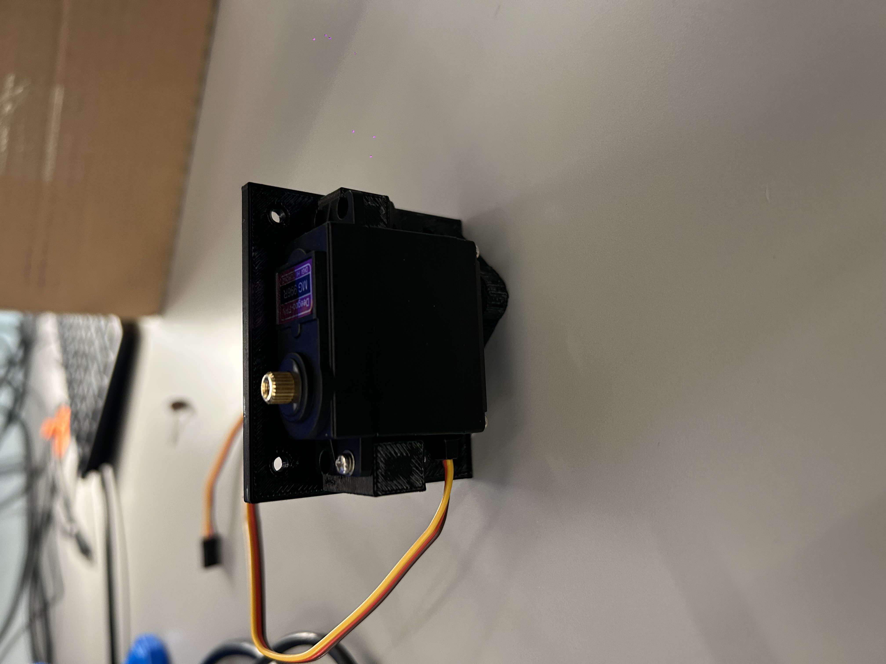

CAD Renders
Models for the 3D-printed parts of the gimbal, panel mount, and electronics enclosure.
The full SolidWorks files and exported STLs are in the repository under CAD/.
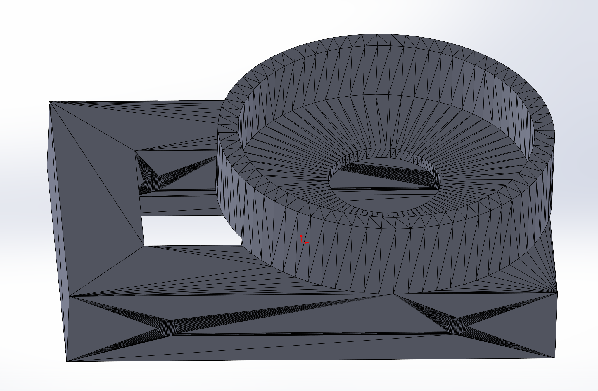
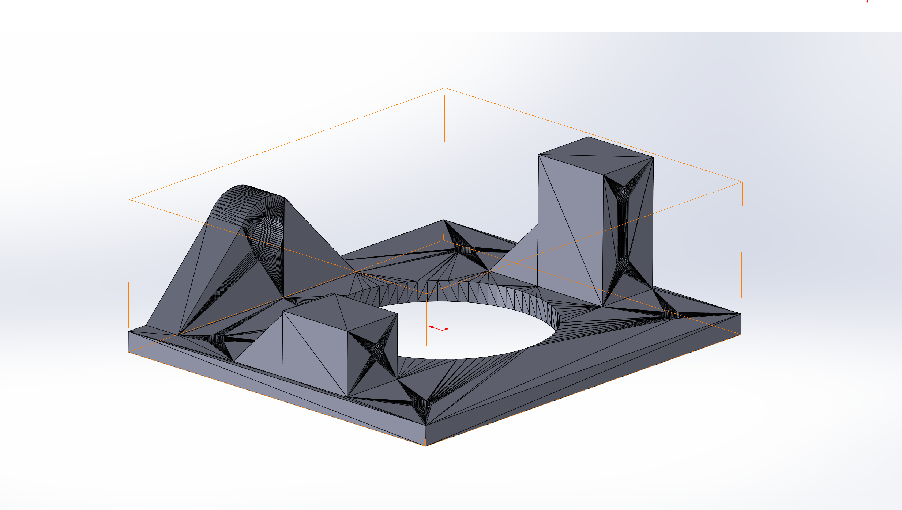
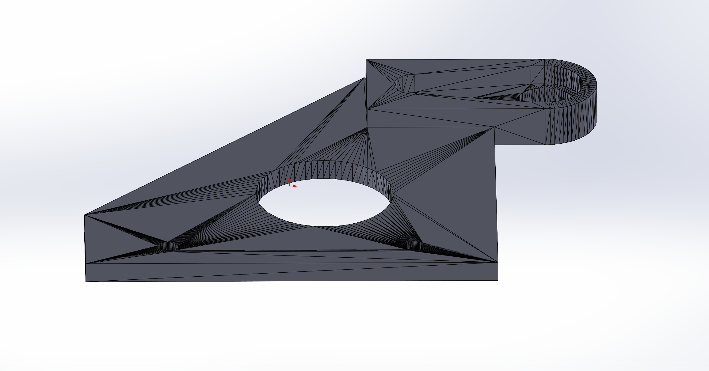
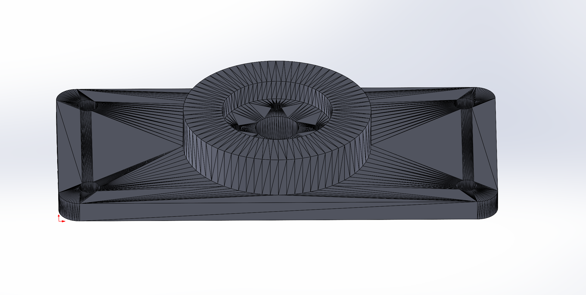
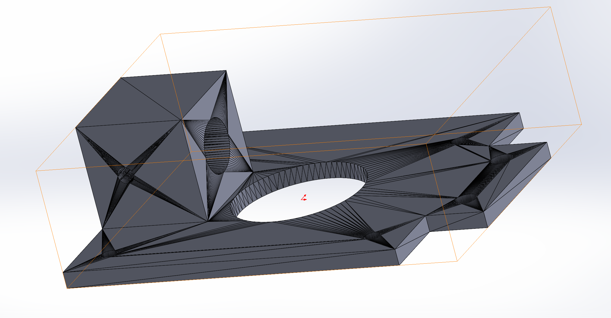
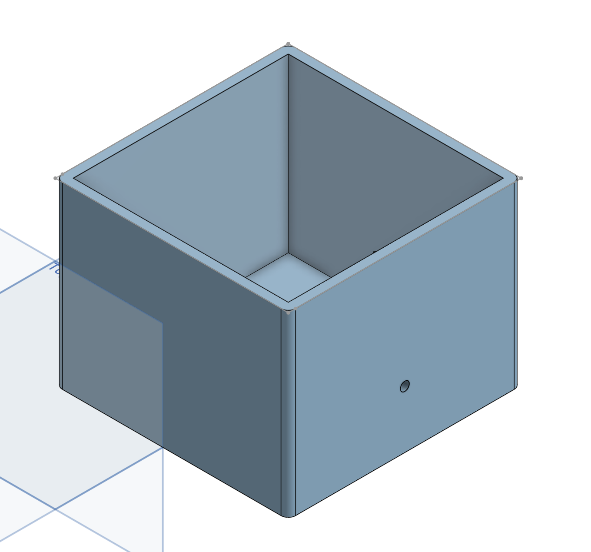
Firmware Architecture
The ATmega328PB is the main MCU. It runs the tracking loop, reads the four LDRs through
its ADC, drives both servos with hardware-timer PWM, and talks to the INA219 over I2C. It
then ships the full telemetry packet (voltage, current, power, pan, tilt) to the ESP32
Feather over UART. The Feather acts as a serial-to-Wi-Fi bridge, parsing UART frames and
hosting a local HTTP server on /data that serves the latest readings as JSON.

MVP Progress
Full Integration: Tracking + Sensing + Dashboard
The ATmega tracks light on both axes, INA219 reports real-time power, UART ships telemetry to the ESP32, and the web dashboard charts voltage, current, power, pan, and tilt live. All 5 SRS requirements validated; HRS-01 and HRS-02 confirmed. MPPT (HRS-03) and USB-C power path (HRS-04) are the two remaining open items.
Demo: desk lamp moved to different positions → panel visibly tracks in real time → dashboard updates → home button pressed → both servos return to center.
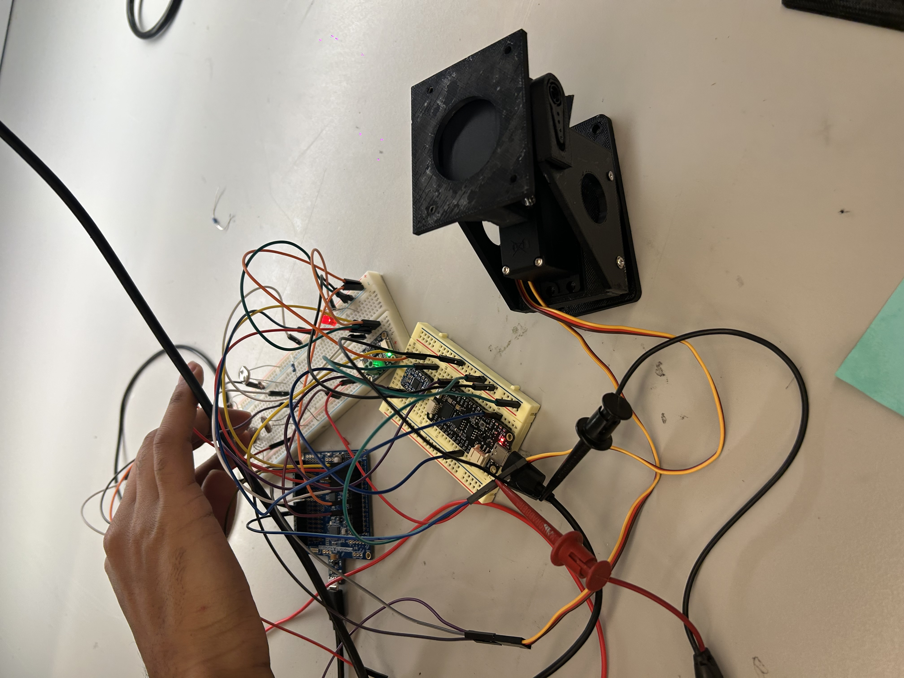
Final Report
Demo Video
Final Build
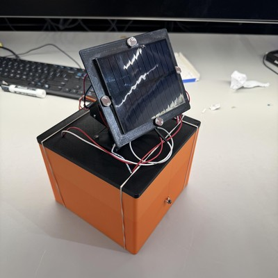
Servo PWM Validation
Oscilloscope captures of the Timer1 PWM output at the two extremes of the servo range, confirming the 50 Hz frame period and clean duty-cycle modulation.
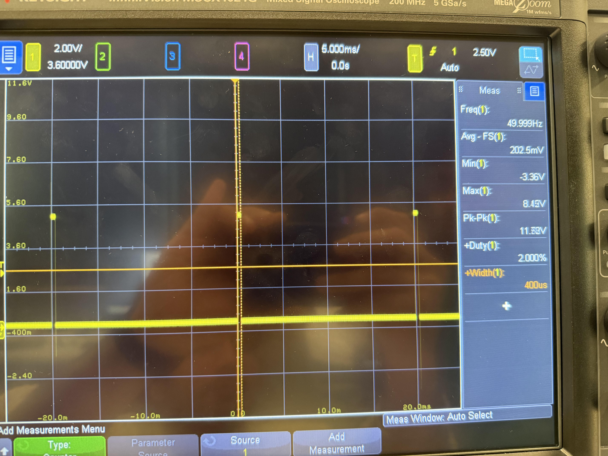
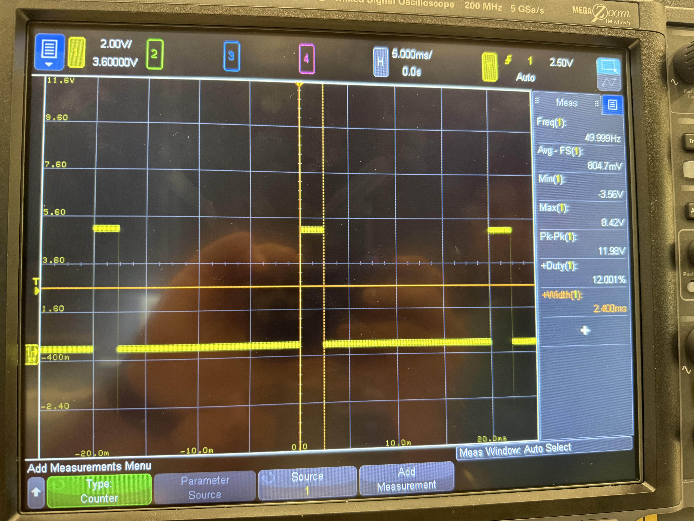
SRS Results
| ID | Description | Status | Validation Outcome |
|---|---|---|---|
| SRS-01 | Sample 4 LDRs via ADC at ≥10 Hz | Achieved | GPIO-toggle measured on scope confirmed sustained sampling at well over 10 Hz. |
| SRS-02 | Deadband filter prevents servo jitter | Achieved | With the panel centered, both servos held still; UART error values stayed inside the configured deadband. |
| SRS-03 | Dashboard latency <3 s | Achieved | Dashboard polls /data at 1 Hz; observed end-to-end lag from a movement to the chart update was well under 3 s. |
| SRS-04 | Hardware-timer 50 Hz PWM, non-blocking | Achieved | Scoped PB1/PB2 outputs show a stable 20 ms period at both min and max duty (Fig 7 & 8); main loop continues during PWM generation. |
| SRS-05 | Button resets servos to home within 2 s | Achieved | External-interrupt ISR sets a flag and both servos return to center on press, well under 2 s. |
HRS Results
| ID | Description | Status | Validation Outcome |
|---|---|---|---|
| HRS-01 | Physical rotation ≥45° pan and ≥45° tilt | Achieved | Both axes very obviously visually exceed 45° - 90° for tilt servo and 180° for pan servo. |
| HRS-02 | LDRs capture directional light differences | Achieved | Lamp moved across the array; raw ADC values logged over UART showed opposing pairs diverging cleanly with light direction. |
| HRS-03 | MPPT / buck-boost regulates charging | Partial | Outdoors under direct sunlight, the buck-boost stage charges the pack as expected. Indoors, our small solar panel can't push enough current to register as a charge event. The topology works, but indoor light levels against this panel size aren't enough to drive it. |
| HRS-04 | USB-C battery charging with LED indicator | Partial | Same as HRS-03: outdoors the USB-C output engages and the LED indicator lights up under sunlight; indoors the panel can't drive enough current to trigger charging. |
Conclusion
Building this turned out to be a much broader integration exercise than any of us expected when we proposed it. We were combining analog sensing, real-time servo control, I2C, IoT, mechanical design, and power electronics, and getting all of those subsystems to coexist on one MCU was the most valuable lesson of the semester.
What we're most proud of is that every software requirement we wrote up front was validated by demo day. The Timer1-driven 50 Hz PWM stayed clean across the full duty-cycle range (Fig 7 & 8); the deadband filter killed jitter without killing responsiveness; the home-button interrupt reset the servos well under our 2 s budget; and the live dashboard pulled JSON over Wi-Fi and rendered with sub-second latency.
Several things forced us to change approach mid-project. Sprint #1 was almost derailed by mysterious board resets that turned out to be servo inrush current dragging the regulator down; switching to a dedicated servo supply rail fixed it instantly, but we burned a couple of hours assuming it was a code bug first. The LDR pairs also didn't match each other as well as we had assumed. Instead of trying to find "matched" sensors, we accepted the variance and added per-channel calibration offsets, diagnosed by streaming raw ADC values over UART.
The biggest unanticipated obstacle was on the power-electronics side. Our buck-boost regulator and USB-C charging path both work outdoors under direct sunlight (the panel charges the pack as expected), but indoors, the available light just isn't enough for our small panel to drive enough current to trigger charging. We could demo the full energy path outside, but for the indoor demo the charging stage stayed dark, which is why HRS-03 and HRS-04 ended up at Partial rather than Achieved. If we were doing it again, we'd plan around indoor demo conditions from the start: a larger panel, a more sensitive pack, or a controlled lamp setup that mimics outdoor irradiance.
Next steps, if we kept going: take the rig outside with a larger panel to actually close out the MPPT and USB-C charging requirements; tighten the perturb-and-observe MPPT loop now that the INA219 telemetry plumbing is in place; and ultimately make the system battery-only and weatherproof so it can run unattended.